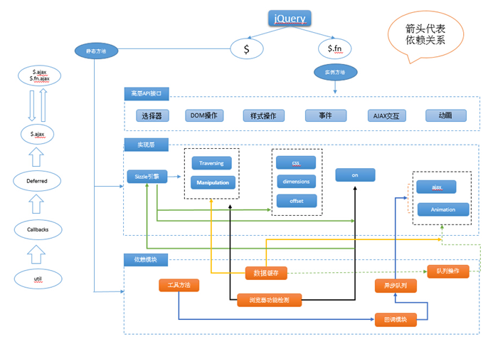
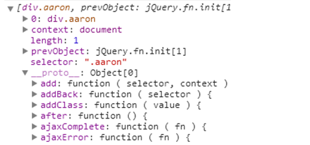

jQuery2.1.1源码解析一、理解架构
接触前端已经有一年多，觉得应该能尝试着看一些伟大框架的源码。首先是大名鼎鼎的jQuery，感谢慕课网的教程。
整体架构
jQuery2.1.1的结构如下：
1234567891011121314151617181920212223242526272829303132333435<script type="text/javascript">(function( global, factory ) {if ( typeof module === "object" && typeof module.exports === "object" ) {module.exports = global.document ?factory( global, true ) :function( w ) {if ( !w.document ) {throw new Error( "jQuery requires a window with a document" );}return factory( w );};} else {factory( global );}}(typeof window !== "undefined" ? window : this, function( window, noGlobal ) {var jQuery = function( selector, context ) {return new jQuery.fn.init( selector, context );};// 核心方法// 回调系统// 异步队列// 数据缓存// 队列操作// 选择器引// 属性操作// 节点遍历// 文档处理// 样式操作// 属性操作// 事件体系// AJAX交互// 动画引擎return jQuery;}));</script>jQuery的模块依赖网

jQuery库如今一共13个模块，模块不是单一的，比如jQuery动画，依赖异步队列、动画队列、回调队列与数据缓存模块等。jQuery的设计中最喜欢做的事就是抽出代码的共同特性使之“模块化”，这是非常值得我们学习的。
自调用匿名函数
任何库与框架设计的第一个要点就是解决命名空间与变量污染的问题。jQuery就是利用了JavaScript函数作用域的特性，采用自调用匿名函数的方法来解决这个问题。
自定义匿名函数有两种常用的方式：
下面是jQuery结构代码的详细解析：
|
|
问题：为什么需要传递window？
这样做是为了减少变量查找所花的时间，如果变量在函数体内就不用经过scope作用域大范围查找。因此，显然把它当成一个局部变量来查找要快一些。另外，把window作为参数传递进来，在进行代码压缩时能减小框架的体积（压缩之后参数名会变化）
问题：为什么需要传递undefined？
因为在早期的浏览器，undefined变量的值是能够改变的，在jQuery功能函数内需要一个准确的undefined变量，所以需要传递进来。
jQuery的类数组对象结构
很多人迷惑的jQuery为什么能像数组一样操作，通过对象get方法或者直接通过下标0索引就能转成DOM对象。
9种用法整体来说可以分三大块：选择器、dom的处理、dom加载。
换句话说jQuery就是为了获取DOM、操作DOM而存在的！所以为了更方便这些操作，让节点与实例对象通过一个桥梁给关联起来，jQuery内部就采用了一种叫“类数组对象”的方式作为存储结构，所以我们即可以像对象一样处理jQuery操作，也能像数组一样可以使用push、pop、shift、unshift、sort、each、map等类数组的方法操作jQuery对象了。
jQuery对象可用数组下标索引是什么原理？
通过$(".Class")构建的对象结构如下所示：

整个结构很明了，通过对象键值对的关系保存着属性，原型保存着方法。我们来简单的模拟一个这样的数据结构：
以上是模拟jQuery的对象结构，通过aQuery方法抽象出了对象创建的具体过程，这也是软件工程领域中的广为人知的设计模式-工厂方法。
- jQuery的无new构建原理
函数aQuery()内部首先保证了必须是通过new操作符构建。这样就能保证当前构建的是一个带有this的实例对象，既然是对象我们可以把所有的属性与方法作为对象的key与value的方式给映射到this上，所以如上结构就可以模拟出jQuery的这样的操作了，即可通过索引取值，也可以链式方法取值，但是这样的结构是有很大的缺陷的，每次调用ajQuery方法等于是创建了一个新的实例，那么类似get方法就要在每一个实例上重新创建一遍，性能就大打折扣，所以jQuery在结构上的优化不仅仅只是我们看到的，除了实现类数组结构、方法的原型共享，而且还实现方法的静态与实例的共存，这是我们之后将会重点分析的。
变量污染与变量冲突
任何库与框架设计的第一个要点就是解决命名空间与变量污染的问题。jq就是利用js本身函数的作用域采用立即调用表达式将变量包裹的函数里，对外开放的只有jQuery和$作为入口。
但是$这么轻便的变量，如果其他框架也将它作为简写怎么办，所以jq提供了noConflict()方法来让出$这个变量，用法是先引入其他框架的js，再引入jq。
解决变量冲突的源码如下：
另外，可以使用闭包的方式传入jQuery对象,也可解决$冲突的问题。
jQuery中的ready与load事件
Query有3种针对文档加载的方法
一个是ready一个是load，这两个到底有什么区别呢？
ready在构建了基本的DOM结构之后就会触发，load事件需要在所有资源比如图片等加载完成之后才触发。所以，ready先执行，load后执行。
DOM文档加载的步骤：
现在我们看看jQuery如何处理文档加载时机的问题：